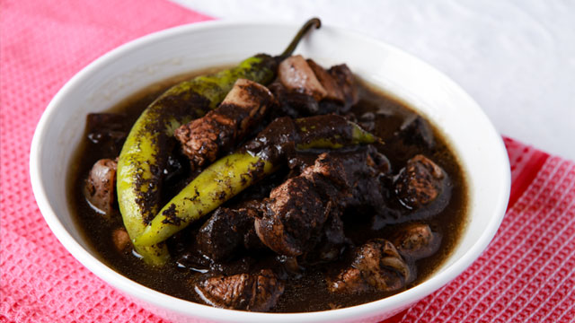

Pork Dinuguan
Description
Pork dinuguan or pork blood stew is a Filipino dish simmered in a rich mixture of vinegar, pig's blood and pork belly. This Filipino dish is an acquired taste and is usually paired with rice or puto (rice cake). Pork belly is usually used but you may also use pork shoulder. Brown the pork before tenderizing it in vinegar, bay leaf, and pig's blood. Make sure pig's blood is completely cooked and stir continuously, so the sauce won't burn as it simmers.
Ingredients
- 1 tablespoon garlic, minced
- 1 medium-sized onion, chopped finely
- 1 tablespoon cooking oil
- 1 kilo pork, (use pork belly or pork loin), cut into cubes
- 1 cup water
- 1 cup vinegar
- 1 kilo pork blood
- salt, to taste
- 2 tablespoons brown sugar
- 2 pieces long green chilies (siling pangsigang)
Steps
- Saute the garlic and onion in pre-heated oil until translucent.
- Add the pork and cook until some of the fat from the pork has rendered.
- Add water, vinegar and the pork blood. Simmer until thick or for 30 minutes.
- Season the pork dinuguan with salt and pepper then add some sugar and the long green peppers. Let it simmer over low flame for 15 minutes. Serve warm.
Source
- https://www.yummy.ph/recipe/pork-dinuguan-recipe